Spookytower
Board Game Arena 官方规则文档
Overview
A magic amulet keeping ghosts in the old clock tower has shattered. The ghosts have all been released and you must recapture them by taking photographs around town. Or find the pieces of the magical amulet and restore the protection.
Objective
The goal of the game is to either:
- Capture 5 ghosts.
- Collect 3 amulet pieces.
Before you is a grid of buildings numbered one through twelve. Through gameplay, you will take cards that have ghosts, amulet pieces, or other bonus effects. There is also a Park where you are guaranteed to find a ghost. And a Grimoire, which allows you to roll the dice again.
Gameplay
At the beginning of a turn, you roll two dice. Choose one die value or the sum of both. You can either...
Scout Buildings (Take Cards): Choose a building matching your dice result. Its card will be placed building side up on your player board. You can accumulate multiple cards across different buildings.
Develop Photos (Flip Cards): Choose one of your scouted buildings matching your dice result. Flip all those cards to their photo side and apply their revealed effects.
Every player has a single chance to reroll, but certain cards allow you to regain that chance.
If you cannot do either of these actions, either because there are no buildings to take (they have all been drawn) or you have no cards matching the dice result to flip, advance the clock. Take the bonus that the clock's hand points to.
Building Cards
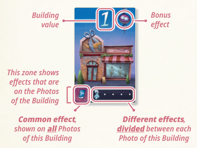
- Building Value: This is the value that must match either one of your dice or the sum of your roll.
- Bonus Effect: If there is a symbol in this corner, you get the bonus effect when you gain the building.
- Common Effect: If there is a symbol in this corner, you get the bonus effect when you flip the card.
- Different Effect: The symbols in this row represent effects that could be found when you flip the card. Each symbol is on one card in the pile.
The Park always has a ghost in it. But you can only gain a park card by spending clues gained from building cards. The more Park cards that get taken, the more clues they will cost.
When you reveal a card with a Grimoire symbol, you gain one card from its deck and apply its effect.
| Icon | Description |
|---|---|
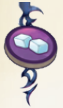 |
When you take this card, flip your Reroll token to its "available" side. |
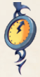 |
When you take this card, move the clock one step and apply the effect shown by the hand. |
| Icon | Description |
|---|---|
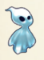 |
Capture a ghost! |
| Choose a Ghost Pet (which counts as a ghost) from the middle. If they've all been claimed, you may steal one from another player. | |
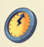 |
Move the clock hand one step and apply the effect by the hand. |
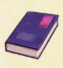 |
Reveal the top Grimoire card and apply its effect. |
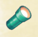 |
Gain a clue that you can use to "go to the Park" (take a park card). |
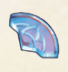 |
Take 1 Amulet fragment |
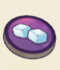 |
Flip your Reroll token to its "available" side. |
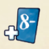 |
Take any Building card of value 8 or less. |
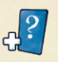 |
Take any Building card. |
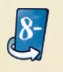 |
Flip one of your Building cards of value 8 or less. |
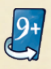 |
Flip one of your Building cards of value 9 or more. |
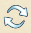 |
Take another turn at the end of your turn. |
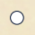 |
Nothing happens. |
Game End
The first player to either obtain 5 ghosts (becoming a legendary Ghost Hunter) or 3 amulet pieces (sending the ghosts back to the clock tower) wins!